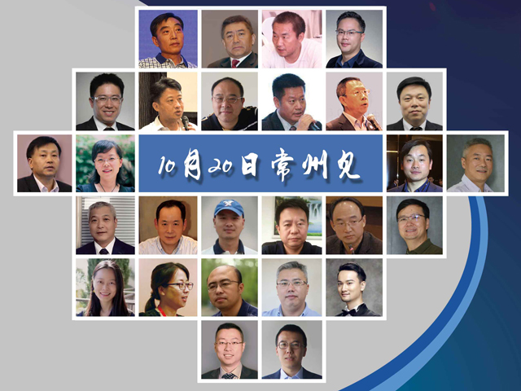

- 【常州峰会人物一】TA说：“在金融市场的‘分形结构’中……”2017/09/14
- 【常州峰会人物二】TA说：“钱只是一个数字，人来到这个世界的目的是……” 2017/09/15
- 【常州峰会人物三】TA说：“不恋虚名列夏花，洁身碧野布云霞……”2017/09/16
- 【常州峰会人物四】TA说：“对市场敬畏，……”2017/09/17
- 【常州峰会人物五】TA说：“亲历印度棉纺市场的发展，……”2017/09/18
- 【常州峰会人物六】TA说：“把风险控制始终放在棉花贸易的……”2017/09/19
- 【常州峰会人物七】陆建华：“一生终将专注棉花事业，……”2017/09/20
- 【常州峰会人物八】梅咏：“传递有价值的信息……”2017/09/21
- 【常州峰会人物九】肖峰：“年年岁岁‘花’相似，……”2017/09/22